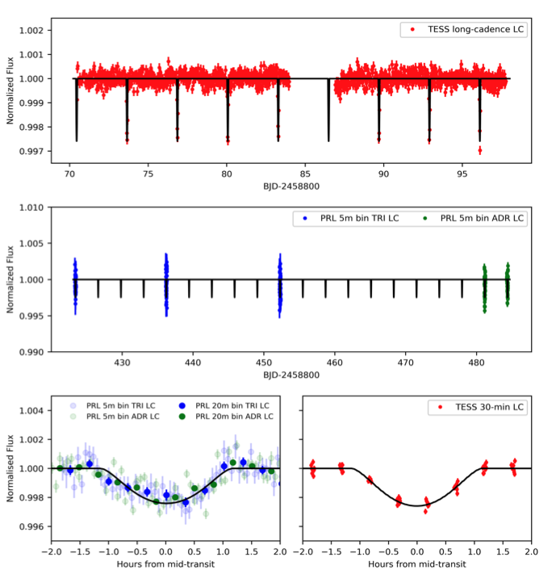
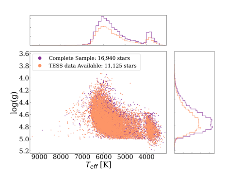

STATUS UPDATE: Orbit 2 of Sector 39 is now available to download as a TICA product from MAST
Welcome TESS followers this weeks news bulletin in which we look at three papers from the archive,
Discovery of an inflated hot Jupiter around a slightly evolved star TOI-1789 (Khandelwal et. al., 2021) :
In this paper the authors report on the discovery of a hot Jupiter with an orbital period of 3.2 days, as derived from TESS and ground-based photometry, with radial velocity measurements.
The host is TOI-1789, a late F-type metal rich ([Fe/H] = 0.37 dex) star, which has a TESS magnitude of 9.1. The radius of the star is 2.172 R⊙, and it is located 223.56 pc away.
By simultaneously fitting the light curves and the radial velocity data of TOI-1789, the authors determined the TOI-1789b planetary mass as 0.70 MJ, with a radius of 1.40 RJ, a bulk density of 0.31 g cm−3, and an orbital separation of 0.04873 AU.
TOI-1789b is therefore an inflated hot Jupiter, and one of the few nearby evolved stars with a close-in planet.
Searching For Transiting Planets Around Halo Stars. II. Constraining the Occurrence Rate of Hot Jupiters (Boley et al., 2021) :
It is thought that giant or Jovian planets preferentially form around stars with solar or super solar metallicities, and that it is more challenging for them to form within metal poor environments. Hot Jupiters are thought to form via metallicity dependent core accretion, and as such it is even more difficult for them to form in poor metallically environments. A more thorough investigation of hot-Jupiters around metal poor stars however, is required to obtain constraints, but this is difficult due to the sample size, and limited quality data.
Utilizing high-cadenced data from TESS, the authors have examined a large sample of halo stars in order to constrain the upper limit of hot Jupiters within the metal poor regime i.e., -2.0 ≤ [Fe/H] ≤ -0.6, allowing the most stringent upper limit to be calculated. The authors find the mean 1-σ upper limit to be 0.18 % for planets with radii 0.8 - 2.0 RJupiter, and periods of 0.5−10 days. This result is consistent with previous predictions indicating that there exists a certain metallicity below which no planets can form.
Identification of SRGt 062340.2-265715 as a bright, strongly variable, novalike cataclysmic variable (Schwope al., 2021) :
SRG 062340.2-265715 is an unusual cataclysmic variable (CV) that was observed by TESS in 2020. In this paper the authors conduct a further investigation into the object using ground- and space-based follow up spectroscopy and photometry.
Optical spectroscopy of the G =12.5 mag counterpart reveals the system to be a nova-like CV at a distance of 495pc. Previous observations of the system with TESS indicated an orbital period of 3.941 hrs, this however was not detected in more recent observations. The more recent, higher cadenced TESS data did however, reveal a quasi-periodic oscillation at around 25 min, with ground-based photometry indicating a variability of 32 min.
This object is located in very sparsely populated regions of color-magnitude diagrams for both X-ray and optical colors and magnitudes. It could be an X-ray under-luminous magnetic CV, an intermediate polar, or an over-luminous nonmagnetic CV. The lack of a clear period or spin, prevents final classification.

Fig. 1: Taken from Khandelwal et. al., (2021). Upper panel: The normalized TESS light curve of TOI-1789 is plotted in red. Eight transits can be seen spaced at ∼3.21 days with a depth of ∼2.6 ppt. Middle Panel: The ground-based follow-up photometry with PRL 0.43 m telescope is shown here (Sec 2.2 of the paper). The blue dots represent the three transits observed with a TRIUS CCD (TRI) with a precision of 1.16 ppt (∼1.3 mmag), while green dots represent the two transit events observed with an ANDOR CCD (ADR) with a precision of 0.92 ppt (∼1 mmag) in 5-min bins. Lower-left panel: All the transits identified by the CCD detector are phased to the orbital period of TOI-1789b and then binned to 5-min and 20-min cadence are plotted here, with blue and green color depicting the TRI and ADR datasets, respectively. Lower-right panel: Red dots represent the phase folded TESS LC (30-min cadence). Note: In all the panels, the over-plotted black line represents the best-fit transit model from EXOFASTv2, obtained by simultaneous fitting of TESS and PRL photometry data. (For details, refer Sec 3.3.2 of the paper)

Fig. 2: Taken from Boley et. al., (2021). Surface gravity and stellar effective temperatures of the stars obtained via the TESS Input Catalog (Stassun et al. 2018b) in the papers final sample (cyan) compared to the complete sample (purple) initially selected based on kinematic information. The bump at high surface gravity and low effective temperature most likely results from these stars being a cool dwarfs.

Fig. 3: Taken from Schwope et. al., (2021). TESS light curve for the SRGt 062340.2-265715. The normalized light curve was obtained by dividing the background-corrected source flux by its median value of 513.1 electrons s-1.